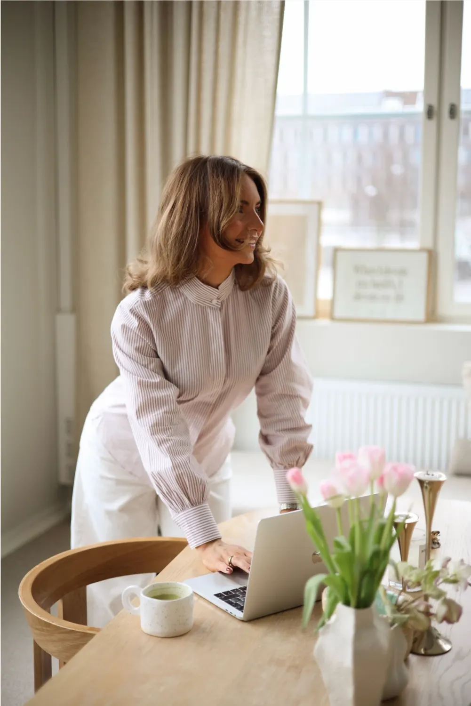
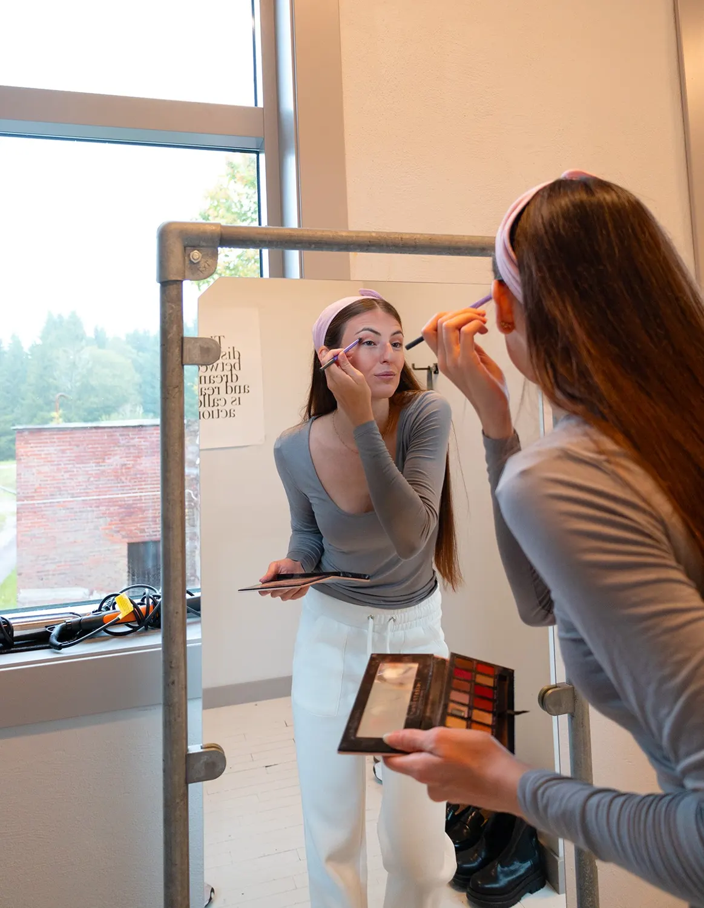
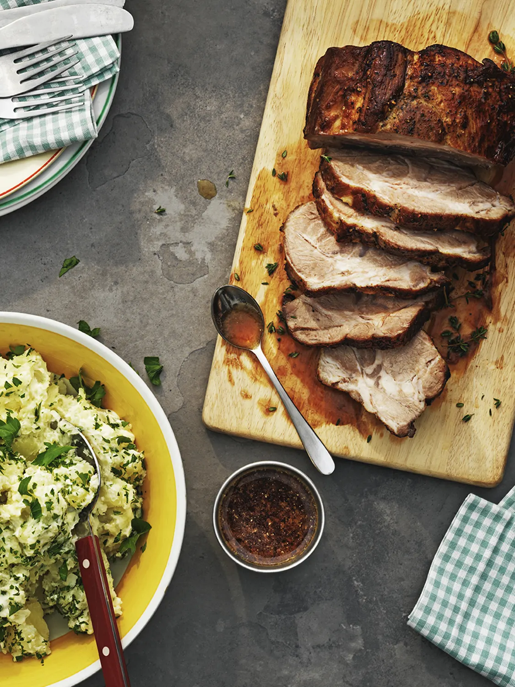

Lovisa Rydeberg Öhrnell

Copywriter and writer
Copy

Feature, words and photos Mellan skolbänken och catwalken Read the piece (in Swedish) Profile, words
Att vara ”oförklarligt barnlös”
Read the piece (in Swedish)
Profile, words
Att vara ”oförklarligt barnlös”
Read the piece (in Swedish)
- story.kia.se Kia Story, profile Möt träningsprofilen, entreprenören och Kia-ambassadören Joanna Swica Hon strukturerar sitt liv i block för att få plats med både prestation och spontanitet. I sju år har Kia varit en självklar följeslagare på Joanna Swicas resor. Read the piece (in Swedish) (opens in a new tab)
- story.kia.se Kia Story, web article Kia Stonic uppdateras – fem saker som vässats Smidig i stan, trygg på längre resor och full av detaljer som gör körningen enklare och roligare. Här är fem nyheter du inte vill missa i Kia Stonic. Read the piece (in Swedish) (opens in a new tab)
- levamedkol.se Levamedkol.se, web copy Leva med KOL Upptäck utmaningarna att leva med KOL och få värdefulla råd för att hantera sjukdomen. Berättelser, råd och stöd för både patienter och anhöriga. Read the piece (in Swedish) (opens in a new tab)
-

scan.se Scan, product page and guides Fläsk Klassisk svensk husmanskost – från rimmat till rökt, från knaperstekt till långkokt. I pannkakan eller ärtsoppan, på grillen eller i pannan. Read the piece (in Swedish) (opens in a new tab)
Education

Bachelor's degree
in Media & Communication
University of Gothenburg